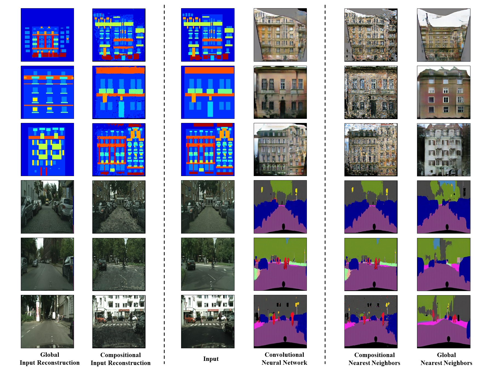
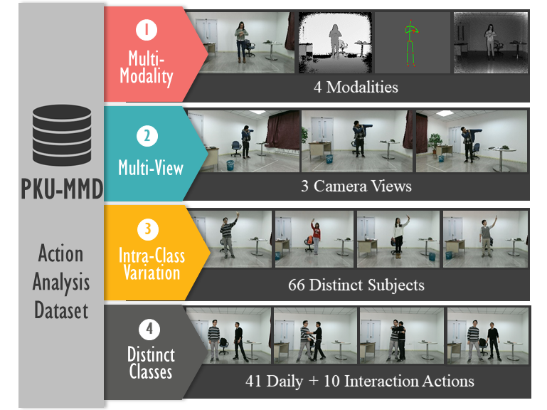
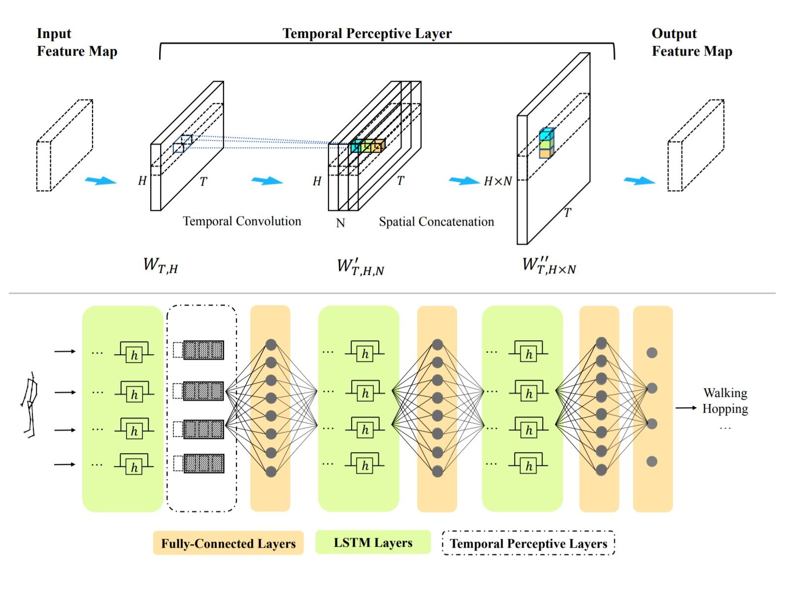
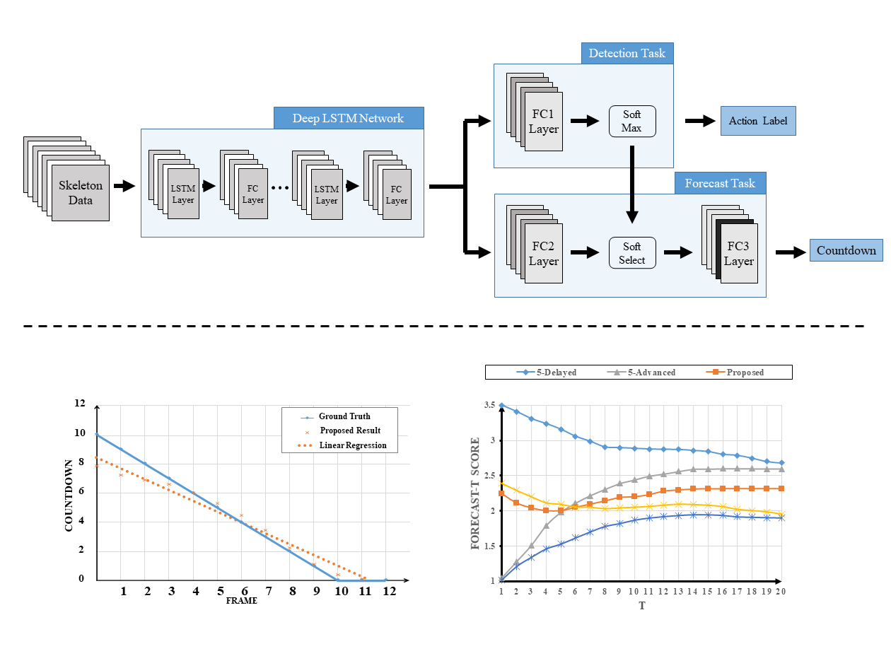

|
|  |
Do Convolutional Neural Networks act as Compositional Nearest Neighbors?
Chunhui Liu, Aayush Bansal, Victor Fragoso, Deva Ramanan
Arxiv preprint 1711.10683.
PDF |
|
|  |
PKU-MMD: A Large Scale Benchmark for Skeleton-Based Human Action Understanding.
Chunhui Liu, Yueyu Hu, Yanghao Li, Sijie Song, and Jiaying Liu
ACM Multimedia (ACM MM) Workshop, Silicon Valley, California, U.S., Oct. 2017.
Project PDF Code Dataset |
|
|  |
Temporal Perceptive Network for Skeleton-Based Action Recognition.
Yueyu Hu, Chunhui Liu, Yanghao Li, Sijie Song and Jiaying Liu
British Machine Vision Conference (BMVC), London, UK, Sep. 2017.
PDF |
|
|  |
Online Action Detection and Forecast via Multi-Task Deep Recurrent Neural Network.
Chunhui Liu, Yanghao Li, Yueyu Hu and Jiaying Liu
IEEE International Conference on Acoustics, Speech, and Signal Processing (ICASSP2017), New Orleans, LA, U.S., March. 2017.
Project PDF
|